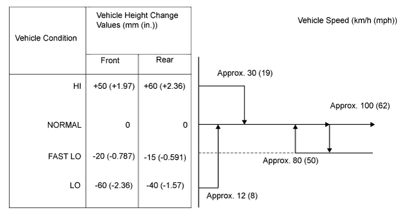
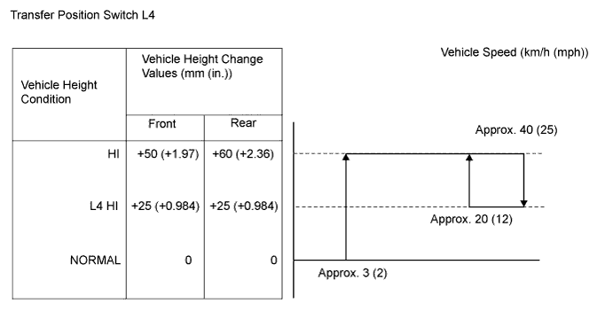
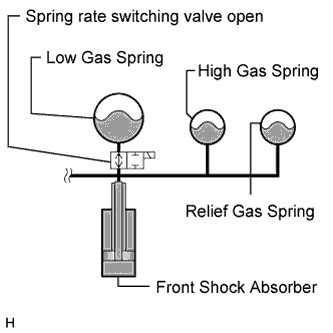
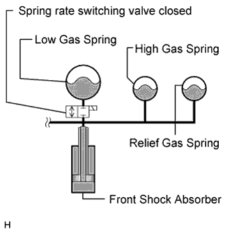

ACTIVE HEIGHT CONTROL SUSPENSION > SYSTEM DESCRIPTION |
| SYSTEM DESCRIPTION |
Vehicle height auto-leveling function:
This function maintains a fixed vehicle height regardless of load conditions (occupants, cargo).
Vehicle speed sensing function:


Extra-high vehicle height control:
Spring rate switching control (front only):
Located in the front suspension control valve.
 |
During normal driving, the low gas, high gas, and relief gas springs are used to maintain a low wheel rate with the spring rate switching valve open.
 |
When the steering wheel is turned and a yaw rate is detected while the vehicle is driven at a speed of 30 km/h (19 mph) or more, or when the brake pedal is depressed while the vehicle speed is 50 km/h (31 mph) or more, the high gas and relief gas springs are used to maintain a high wheel rate with the spring rate switching valve closed.
| FUNCTION OF COMPONENTS |
| Component | Function |
| Damping force Control Switch | Selects the damping force (COMFORT/NORMAL/SPORT). Located in the suspension control switch. |
| Height Control Switch | Selects the vehicle height (low/normal/high). Located in the suspension control switch. |
| Height Control OFF Switch | Stops vehicle height control. However, when the vehicle is driven, vehicle height control automatically becomes enabled according to the vehicle speed (Vehicle height NORMAL: approximately 80 km/h (50 mph), vehicle height not NORMAL: approximately 30 km/h (19 mph)). |
| Height Control Sensors | Detects the vehicle height and displacement volume of the suspension caused by unevenness of the road. |
| Steering Sensor | Detects the steering angle and steering rotation direction. |
| Acceleration Sensors | Detects the front body vertical accelerated motion. |
| Height control pump and motor | Creates the high oil pressure essential for vehicle height adjustment. |
| No. 1 Height Control Valve | Leveling valves: There is a leveling valve for each wheel (total of 4). They open and close the oil paths from the pump to the wheels according to suspension control ECU signals. Normally, they are open. Gate valves: Used for centering of the piston inside the center cylinder (front gate valve and rear gate valve). Accumulator valve: Used for accumulating pressure. |
| Pressure Sensor | Detects the fluid pressure. Located in the height control pump and motor assembly. |
| Fluid Temperature Sensor | Detects the fluid temperature. Located in the height control pump and motor assembly. |
| Damping force Control Actuators |
|
| Yaw Rate Sensor | Detects the yaw rate and acceleration. |
| Skid Control ECU | Receives the signals of the stop light switch and speed sensor, and sends them to the suspension control ECU. |
| ECM | Sends engine speed information to the suspension control ECU. |
| Suspension Control ECU |
|
| Suspension Control Pump Accumulator | When the vehicle height rises, the accumulated oil pressure is released to increase the speed at which the vehicle rises. |
| Center Suspension Control Cylinder | Mechanically operates to send and receive oil to and from the wheels according to the pressure balance of the 4 wheels. |
| FAIL-SAFE FUNCTION |
When the system is determined to be malfunctioning, the vehicle height is returned to NORMAL at a vehicle speed of 30 km/h (19 mph) only when possible.
Conditions when vehicle height control stops: